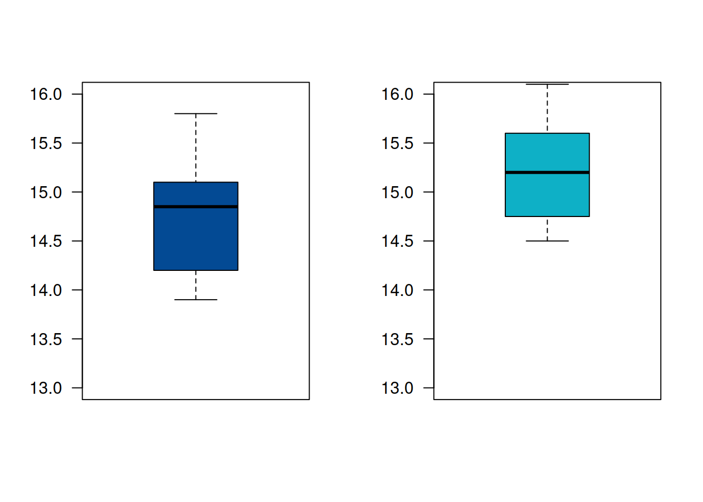

Cuando se desea comparar los resultados obtenidos en dos poblaciones o dos grupos se puede tener interés en la diferencia de medias (\(\mu_1- \mu_2\)), en la diferencia de proporciones (\(p_1-p_2\)) o en la razón de sus varianzas (\(\sigma_1^{2} / \sigma_2^{2}\))
| parámetro | Estimador por IC | Supuestos |
|---|---|---|
| \(\mu_{1}-\mu_{2}\) | \(\bar{d} \pm t_{\alpha/2}\dfrac{s_{d}}{\sqrt{n}}\) | Grupos pareados \(d={x}_{1}-x_{2}\),\(X_{1}\sim N(\mu_{1}, \sigma^{2}_{1})\),\(X_{2}\sim N(\mu_{2}, \sigma^{2}_{2})\) |
| \(\mu_{1}-\mu_{2}\) | \((\bar{x_{1}}-\bar{x_{2}})\pm t_{\alpha/2} \hspace{.2cm}s_{p} \sqrt{\frac{1}{n_{1}}+\frac{1}{n_{2}}}\) | Grupos independientes,\(X_{1}\sim N(\mu_{1}, \sigma^{2}_{1})\),\(X_{2}\sim N(\mu_{2}, \sigma^{2}_{2})\), varianzas iguales |
| donde \(s_{p}^{2}=\dfrac{(n_{1}-1)s_{1}^{2}+(n_{2}-1)s_{2}^{2}}{n_{1}+n_{2}-2}\) y \(v=n_{1}+n_{2}-2\) | ||
| \(\mu_{1}-\mu_{2}\) | \((\bar{x_{1}}-\bar{x_{2}})\pm t_{\alpha/2, v^{*}} \sqrt{\frac{s_{1}^{2}}{n_{1}}+\frac{s_{2}^{2}}{n_{2}}}\) | Grupos independientes,\(X_{1}\sim N(\mu_{1}\), \(\sigma^{2}_{1})\), \(X_{2}\sim N(\mu_{2}, \sigma_{2}^{2})\), varianzas diferentes |
| donde \(v^{*}=\frac{(s_{1}^{2}/n_{1}+s_{2}^{2}/n_{2})^{2}}{\Big[(s_{1}^{2}/n_{1})^{2}/(n_{1}-1)\Big]+\Big[(s_{2}^{2}/n_{2})^{2}/(n_{2}-1)\Big]}\) | ||
| \(p_{1}-p_{2}\) | \((\widehat{p_{1}}-\widehat{p_{2}})\pm z_{\alpha/2} \sqrt{\dfrac{\widehat{p_{1}}(1-\widehat{p_{1}})}{n_{1}}+\dfrac{\widehat{p_{2}}(1-\widehat{p_{2}})}{n_{2}}}\) | \(n_{1}>>\), \(n_{2}>>\) |
| \(\dfrac{\sigma^{2}_{1}}{\sigma^{2}_{2}}\) | \(\Bigg(\dfrac{s^{2}_{1}}{s^{2}_{2}} \dfrac{1}{f_{1-\alpha/2}(v_{1}v_{2})}; \dfrac{s^{2}_{1}}{s^{2}_{2}} \dfrac{1}{f_{\alpha/2}(v_{1}v_{2})}\Bigg)\) | \(X_{1}\sim N(\mu_{1}\), \(\sigma^{2}_{1})\), \(X_{2}\sim N(\mu_{2}, \sigma_{2}^{2})\) |
Cuando se compraran dos poblaciones se puede estar interesado en la diferencia de medias, diferencia de proporciones o la razón de varianzas. Es necesario distinguir cuando se trata de diferencia de medias pareadas o diferencia para poblaciones independientes.
Se consideran muestras pareadas cuando existen una fuerte dependencia entre pares de observaciones de dos poblaciones. Es el caso de experimentos donde se observan individuos en dos momentos diferentes de tiempo, por ejemplo estudiantes a los que se les realiza un examen de entrada y un examen de salida. En este caso se compara la evolución de cada individuo consigo mismo conformando parejas de mediciones.
\[IC_{d=\bar{x}_{1}-\bar{x}_{2}}: \bar{d} \pm t_{\alpha/2} \frac{s_{d}}{\sqrt{n}}\]
donde \(d_{i}=x_{1i}-x_{2i}\) y \(s_{d}\) es la desviación estándar de las diferencias \(d_{i}=x_{1i}-x_{2i}\)
Se afirma que una persona podrá reducir su peso en un periodo de dos semanas un promedio de 4.5 kilogramos con una nueva dieta. Los pesos de 7 mujeres de siguieron esta dieta se registraron antes y después de un periodo de dos semanas.
peso.ant=c(58.2, 60.3, 61.3, 69.0, 64.0, 62.6, 56.7)
pes.des=c(60.0, 54.9, 58.1, 62.1, 58.5, 59.9, 54.4)
Pruebe la afirmación sobre la dieta calculando un intervalo de confianza del 95% para la diferencia de medias . Suponga que las diferencias de los pesos se distribuyen aproximadamente normal.
peso.ant=c(58.2, 60.3, 61.3, 69.0, 64.0, 62.6, 56.7)
peso.des=c(60.0, 54.9, 58.1, 62.1, 58.5, 59.9, 54.4)
t.test(peso.ant,peso.des, # variables
paired = TRUE, # pareadas
conf.level = 0.95)$conf.int # nivel de confianza[1] 0.8029499 6.1113358
attr(,"conf.level")
[1] 0.95Se puede afirmar que la diferencia entre los promedios de los peso antes y después, está entre \((0.80 6.11)\) kilogramos con una confianza del 95%. Por el momento diremos que la dieta generó una reducción en el peso dado que los dos valores del intervalo son positivos. La veracidad de la afirmación, la retomaremos en la unidad 4.3 donde se realiza una prueba de hipótesis.
Caso1 :Supone varianzas iguales y desconocidas
\[(\bar{x}_{1}-\bar{x}_{2})\pm t_{\alpha/2} \hspace{.2cm}s_{p} \sqrt{\frac{1}{n_{1}}+\frac{1}{n_{2}}}\]
donde \(s_{p}^{2}\) es la varianza común
\[s_{p}^{2}=\frac{(n_{1}-1)s_{1}^{2}+(n_{2}-1)s_{2}^{2}}{n_{1}+n_{2}-2}\]
y \(t_{\alpha/2}\) se distribuye t-student con \(v=n_{1}+n_{2}-2\) grados de libertad
Supuestos: + \(X_{1}\) y \(X_{2}\) son variables aleatorias independientes con distribución normal + \(X_{1}\) y \(X_{2}\) tienen varianzas iguales pero desconocidas
A seis ingenieros que trabajan para el estado se les solicito realizar un pronostico la tasa de inflación para el año entrante. La misma petición se le realizo a ocho especialistas en finanzas que trabajan para el sector privado. Los pronósticos entregado fueron:
| ingenieros : | 14.2%, | 15.1%, | 13.9%, | 14.9%, | 14.8%, | 15.8% | ||
| especialistas en finanzas: | 15.7%, | 16.1%, | 15.2%, | 14.9%, | 14.6%, | 14.5%, | 15.2%, | 15.5% |
¿Están los especialistas (ingenieros y financieros) realizando pronósticos similares? . Suponga que los pronósticos realizados tienen distribución normal. Construye un intervalo de confianza para la diferencia de los promedios realizados por los ingenieros y los especializadas en finanzas del 95%. Concluya a partir de los resultados.
En este caso se trata de una diferencia de medias para grupos independientes, por lo cual es necesario conocer como es la relación entre sus varianzas (iguales o diferentes) y de este modo ajustar el procedimiento.

var.test(inf.ing, inf.fin)$conf.int # variables [1] 1.324813 47.984900 attr(,"conf.level") [1] 0.95 t.test(inf.ing, inf.fin, paired = FALSE, # grupos independientes var.equal = TRUE, # varianzas iguales conf.level = 0.95)$conf.int [1] -0.9382534 2.0799200 attr(,"conf.level") [1] 0.95
Al realizar la comparación de las varianzas se puede observar que el
intervalo contiene a 1, por lo cual asumiremos que las varianza son
iguales (este procedimiento se debe hacer mediante pruebas de hipótesis
que ser verán en la Unidad 4.3). Utilizaremos la función de R
var.test(x, ...) para establecer si las varianzas son
iguales o diferentes y luego la función
t.test(x,y, ...)$conf.int para calcular el intervalo.
La diferencia entre la estimación promedio de la inflación
pronosticada por lo ingenieros y la realizada por los especialistas en
finanzas, con una confianza del 95%, está entre
(-1.1704541; 0.2454541), lo cual nos indica que sus
estimaciones promedio son similares.
Caso2 : Supone varianzas diferentes, pero desconocidas
En el caso tenemos
\[(\bar{x}_{1}-\bar{x}_{2})\pm t_{\alpha/2} \sqrt{\frac{s_{1}^{2}}{n_{1}}+\frac{s_{2}^{2}}{n_{2}}}\]
donde los grados de libertad de t se aproximan a
\[v=\frac{(s_{1}^{2}/n_{1}+s_{2}^{2}/n_{2})^{2}}{\Big[(s_{1}^{2}/n_{1})^{2}/(n_{1}-1)\Big]+\Big[(s_{2}^{2}/n_{2})^{2}/(n_{2}-1)\Big]}\]
Supongamos el mismo caso del ejemplo anterior, pero con los siguientes datos :
| ingenieros : | 12.2%, | 11.1%, | 13.9%, | 15.9%, | 14.5%, | 15.1% | ||
| especialistas en finanzas: | 13.7%, | 12.1%, | 12.2%, | 13.9%, | 13.6%, | 13.5%, | 13.2%, | 13.5% |
var.test(inf.ing, inf.fin)$conf.int Intervalos de confianza para la razón de varianzas [1] 1.324813 47.984900 attr(,"conf.level") [1] 0.95 t.test(inf.ing, inf.fin, paired = FALSE, # grupos independientes var.equal = FALSE, # varianzas diferentes conf.level = 0.95)$conf.int Intervalos de confianza para la diferencia de medias [1] -1.329604 2.471270 attr(,"conf.level") [1] 0.95 Min. 1st Qu. Median Mean 3rd Qu. Max. 11.10 12.62 14.20 13.78 14.95 15.90 Min. 1st Qu. Median Mean 3rd Qu. Max. 12.10 12.95 13.50 13.21 13.62 13.90
En este caso las varianzas son diferentes, por lo que se debe ajustar
la función a : var.equal = FALSE,. Los resultados indican
que no existen diferencias estadísticas entre los promedios estimados
por los ingenieros y los especialistas en finanzas. Siendo \(\mu_{ing} < \mu_{fin}\)
En cualquiera de los casos los resultados pueden generar que intervalo sea de la forma:
| \((-,-)\) | los dos limites que conforman el IC son negativos. De este resultado se puede concluir que \(\mu_{1}<\mu_{2}\) |
| \((-,+)\) | el limite inferior es negativo y el superior es positivo. Este intervalo contiene la posibilidad de \(\mu_{1}=\mu_{2}\) |
| \((+,+)\) | los dos limites son positivos , entonces podemos decir que \(\mu_{1}>\mu_{2}\) |
\[(\widehat{p_{1}}-\widehat{p_{2}}) \pm z_{\alpha/2} \sqrt{\frac{\widehat{p_{1}}(1-\widehat{p_{1}})}{n_{1}}+\frac{\widehat{p_{2}}(1-\widehat{p_{2}})}{n_{2}}}\]
Ejemplo
En una muestra de 200 clientes, el 20% indica preferencia por tamaño especial de pizza. Con posterioridad a una campaña publicitaria realizada en radio y televisión promoviendo dicho producto, se selecciono una muestra de igual tamaño. En esta ultima muestra el 22% de los clientes indico preferencia por el producto. De acuerdo con estos resultados calcule un intervalo de confianza del 95% para la diferencia de proporciones. De acuerdo a los resultados obtenidos, podría afirmarse que la campaña publicitaria fue efectiva?
En este caso se trata de la comparación de dos proporciones (proporción de clientes que prefieren el tamaño especial dentro de los clientes de la pizzería - \(p_{2}\) comparada con la proporción de los clientes de la misma pizzería pero después de realizada la campaña publicitaria - \(p_{2}\))
Información suministrada:
En ambos casos los tamaños de muestra se consideran grandes, permitiendo transformar la diferencia de proporciones en una variable z con distribución normal estándar
\[(0.20-0.22) \pm 1.96 \sqrt{\frac{0.20*(1-0.20)}{200}+\frac{0.22*(1-0.22)}{200}}\]
\[(-0.0998 ; 0.0598)\]
El intervalo estimado se lee: La diferencia entre la proporción de clientes que prefieren el tamaño especial de pizza antes de la realizar la campaña publicitaria y la proporción de clientes que prefieren este mismo tamaño, después de realizada la campaña publicitaria esta entre -0.0998 y 0.0598, con una confianza del 95%. Estos resultados indican que \(p_{1}-p_{2} \approx 0\) o también que \(p_{1} \approx p_{2}\), lo cual quiere decir que la proporción de clientes con esta preferencia no aumentó después de haber realizado la campaña publicitaria.
prop.test(c(40,44),c(200,200))$conf.int[1] -0.10480688 0.06480688
attr(,"conf.level")
[1] 0.95El resultado obtenido por R es levemente diferente, debido a ajuste en la formula propuesto por R.G. Newcpmbe (1998), e incorporado en la función de R
En cualquiera de los casos los resultados pueden generar que intervalo sea de la forma:
| \((-,-)\) | los dos limites que conforman el IC son negativos. De este resultado se puede concluir que \(p_{1}<p_{2}\) |
| \((-,+)\) | el limite inferior es negativo y el superior es positivo. Este intervalo contiene la posibilidad de \(p_{1}=p_{2}\) |
| \((+,+)\) | los dos limites son positivos , entonces podemos decir que \(p_{1}>p_{2}\) |
La comparación de varianzas se realiza con relación al valor que tome la razón de sus valores \(\sigma^{2}_{1}/\sigma^{2}_{2}\). Observe que si esta relación es uno, indicaría que las varianzas son iguales. Por el contrario si esta razón es muy grande indicaría que \(\sigma^{2}_{1}>\sigma^{2}_{2}\) y si su valor es muy cercano a cero indicaría lo contrario.
El uso de esta comparación esta relacionado con supuestos necesarios para la comparación de medias independientes, análisis de varianza y diseños experimentales. En este caso se emplea en su construcción la distribución F de Fischer
\[\Bigg(\dfrac{s^{2}_{1}}{s^{2}_{2}} \dfrac{1}{f_{1-\alpha/2(v_{1}v_{2})}}; \dfrac{s^{2}_{1}}{s^{2}_{2}} \dfrac{1}{f_{\alpha/2(v_{1}v_{2})}}\Bigg)\]
En este caso el valor de referencia es uno, dado que la razón sera igual a uno cuando las varianzas son iguales. Si el intervalo no contiene el uno y solo valores por debajo, indicará que \(\sigma^{2}_{1} < \sigma^{2}_{2}\). Por el contrario si el intervalo contiene solo valores por encima de uno indicará que : \(\sigma^{2}_{1} > \sigma^{2}_{2}\)